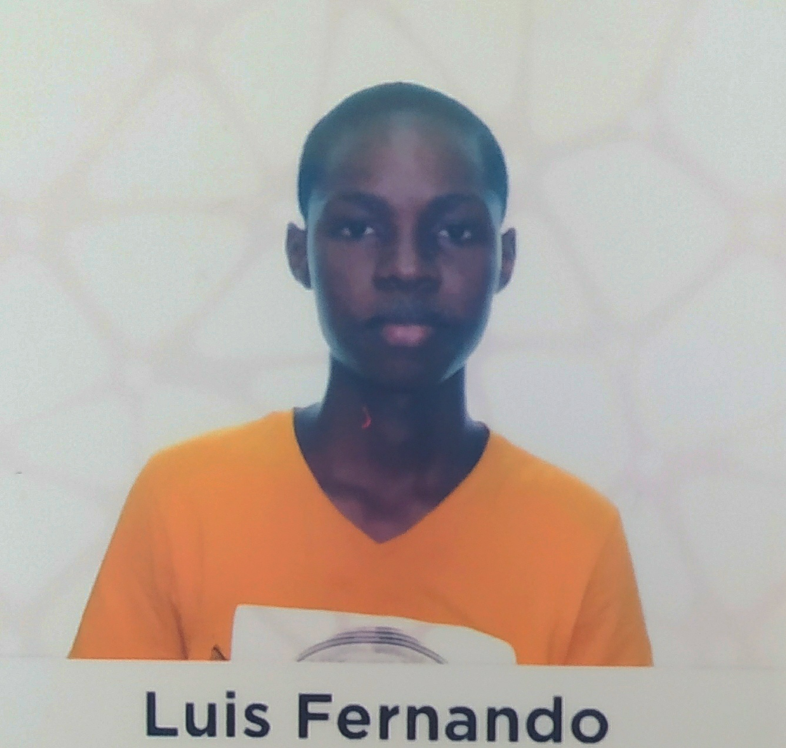

Ingeniero de sistemas
Direccion: Diagonal 40 # 33 bsur 35 Obrero-Envigado
Tel: 3146963901
Repositorio github Repositorio Heocities Correo Electronico

Naci el 7 de septiembre del 2001 en la ciudad de quibdo, tengo 21 años, me gradue en el instituto educativo matias trespalacios
Me gusta mucho los videojuegos, principalmente los relacionados con futbol. Me gusta mucho la musica principalmente la de hip hop, reggue y la salsa, y son fanatico de la cocina.
Actualmente solo hablo mi idioma natal, de igual forma me gustaria aprender frances, ingles e italiano
Ninguna hasta el momento
prueba